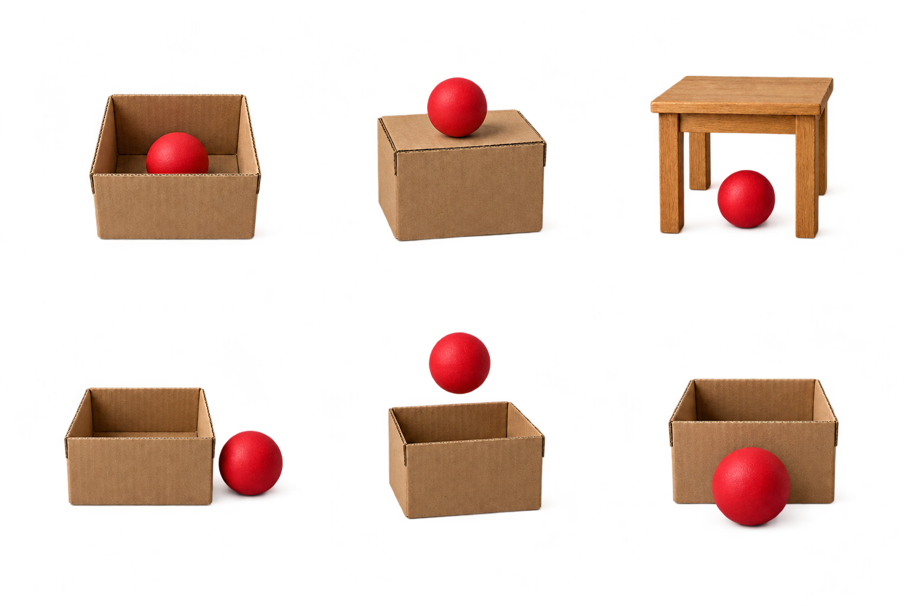

Grammar practice · 6B
My dream home
Describe a home and compare rooms
Where is it?6B

The ball is in the box. The ball is in front of the box.
1 Cover the six labels. Take turns. Point to a picture and say the preposition.
Your partner checks the label. Try all six pictures.
2 Room check. Read the facts. Correct the sentences.
The phone is on the table. The bag is under the table.
The chair is next to the sofa. The shoes are in the box.
- The phone is under the table.
- The bag is on the table.
- The chair is in front of the sofa.
- The shoes are next to the box.
3 On separate paper, draw a room with three objects. Choose one.
Don’t say its name. Write and say two sentences about where it is. Your partner points to the object.